Fine-tune VLM อ่านใบเสร็จ
LoRA Adapter ขนาด 34.9 MB ทำให้ยอดรวมตรงจาก 88.4% เป็น 100.0% และ Item F1 จาก 69.9% เป็น 88.4%
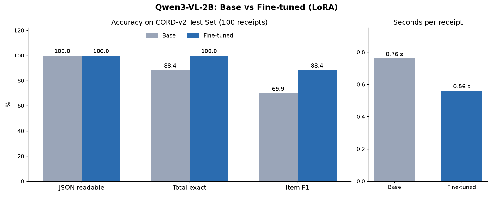
ให้เทียบแท่งสีน้ำเงิน (Fine-tuned) กับแท่งสีเทา (Base) ในแต่ละตัวชี้วัด · Test Set 100 ใบ · ที่มา results/metrics.json
บทนี้มี 3 ส่วน และ LAB ทั้ง 9 ขั้นใช้พรอมต์ขั้นละ 1 อัน
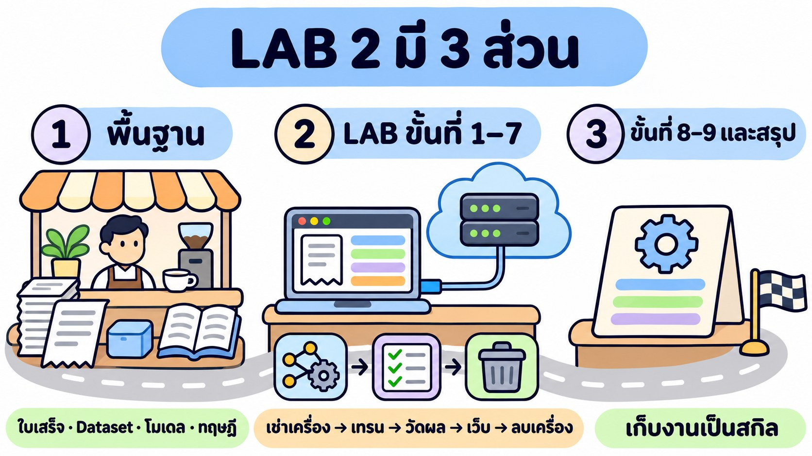
LAB นี้มี 9 ขั้น (7 ขั้นของการทดลอง + 2 ขั้นเก็บงานเป็นสกิล) โค้ดทุกไฟล์ AI เขียนจากพรอมต์ โดยเริ่มจากโฟลเดอร์ว่าง
วิธีใช้สไลด์นี้
ไปหน้าถัดไป / ก่อนหน้า
→ Space / ← หรือปุ่มมุมขวาล่าง
สารบัญทุกหน้า
O แล้วคลิกหน้าที่ต้องการ · F เต็มจอ
ขยายภาพ
คลิกที่ภาพ · คลิกอีกครั้งหรือ Esc เพื่อปิด
คัดลอกพรอมต์ของแต่ละขั้น
ปุ่ม คัดลอกพรอมต์ทั้งหมด ให้ข้อความเดียวกับ README.md ตรงตัวอักษร แม้พรอมต์ถูกแบ่งแสดง 2 หน้า
ตรวจผลหลังรัน
สไลด์ ตรวจผลของคุณ ต่อจากพรอมต์ทุกขั้น ติ๊กได้ และเบราว์เซอร์นี้จะจำไว้
เปิดไฟล์จริง
ลิงก์เปิดไฟล์ในโฟลเดอร์ของบท ให้เปิดสไลด์จากโฟลเดอร์ lab2_vlm
ปัญหา ข้อมูล โมเดล และทฤษฎี 5 ข้อ
สิ่งที่ต้องเข้าใจก่อนเริ่ม LAB: ร้านค้าต้องการอะไร ใช้ข้อมูลชุดใด ใช้โมเดลใด และ LoRA ทำงานอย่างไร
ปัญหาของร้านค้า
ร้านค้ามีใบเสร็จกองโต ถ้าโมเดลอ่านรูปใบเสร็จแล้วส่ง รายการ + ยอดรวม ออกมาเป็นข้อมูลได้ ก็ไม่ต้องพิมพ์เอง
เป้าหมายคือถ่ายรูปใบเสร็จ แล้วให้ VLM อ่านลงสมุดรายจ่ายแทนการพิมพ์เอง
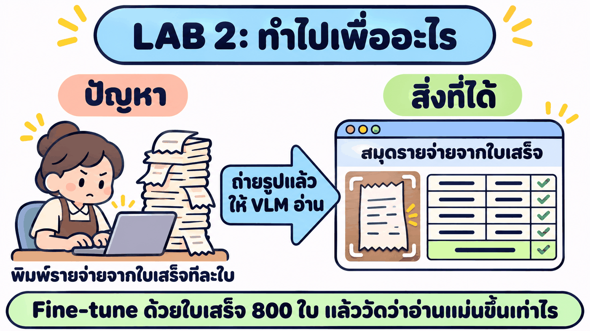
คำถามของการทดลอง: โมเดลเล็กสำเร็จรูปอ่านใบเสร็จได้แม่นแค่ไหน และถ้า Fine-tune ด้วย LoRA จากใบเสร็จ 800 ใบ จะแม่นขึ้นเท่าไร โดยเทรนเพียงส่วนเล็ก ๆ ของโมเดล
CORD-v2 คือรูปถ่ายใบเสร็จจริง และทุกใบมีเฉลยเป็น JSON เช่นใบ train_234results/dataset_samples.jpg
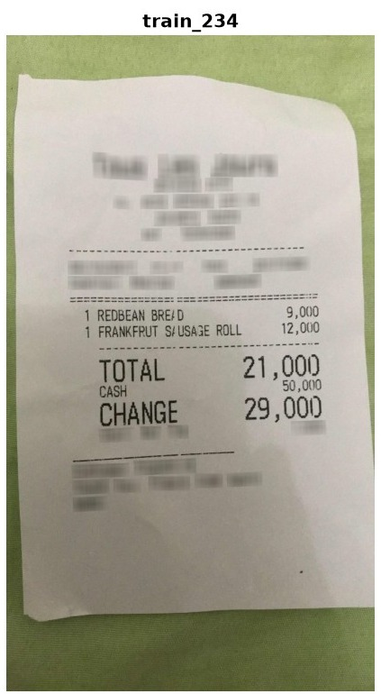
{"items":[{"name":"REDBEAN BREAD","qty":1,"price":9000},
{"name":"FRANKFRUT SAUSAGE ROLL","qty":1,"price":12000}],
"subtotal":null,"tax":null,"total":21000}label 1 รายการ (ใบ train_234 ในภาพ) · นี่คือคำตอบที่เราต้องการให้โมเดลเขียนออกมาเองเมื่อเห็นรูป
รูปถ่ายใบเสร็จจริงจากร้านอาหาร คาเฟ่ และร้านค้าในอินโดนีเซีย (เงินรูเปียห์ Rp) พร้อมเฉลยว่าบนใบมีเมนู จำนวน ราคา ภาษี และยอดรวมเท่าไร · ผู้จัดทำ NAVER CLOVA · Park et al., *CORD: A Consolidated Receipt Dataset for Post-OCR Parsing* (NeurIPS 2019 Document Intelligence Workshop) · สัญญาอนุญาต CC BY 4.0 · ภาพตัวอย่าง 6 ใบ: results/dataset_samples.jpg
Dataset แบ่งเป็น 3 ชุดตามที่ผู้จัดทำให้มา และแต่ละชุดมีหน้าที่ต่างกัน
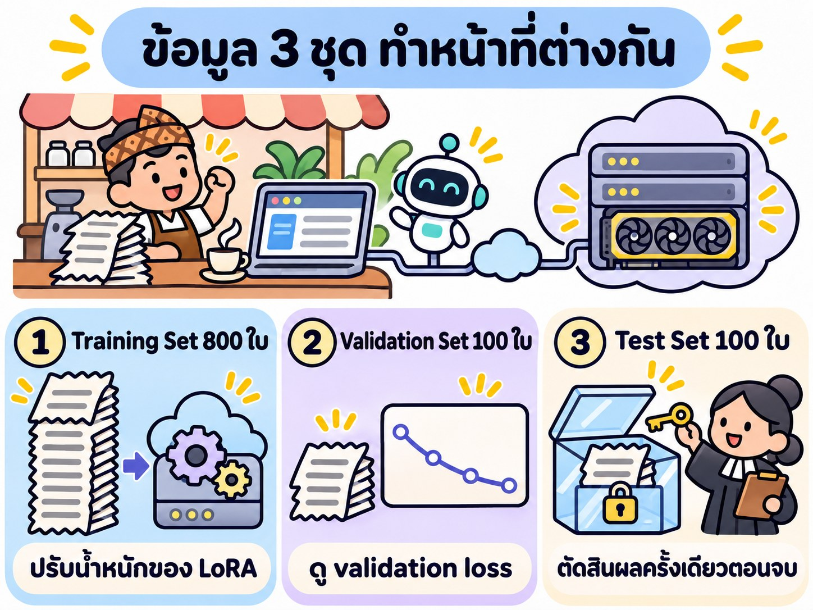
กติกาในคอลัมน์ขวาคือสิ่งที่โมเดลสำเร็จรูปยังไม่รู้ และเป็นสิ่งที่ LAB นี้จะสอนเพิ่ม
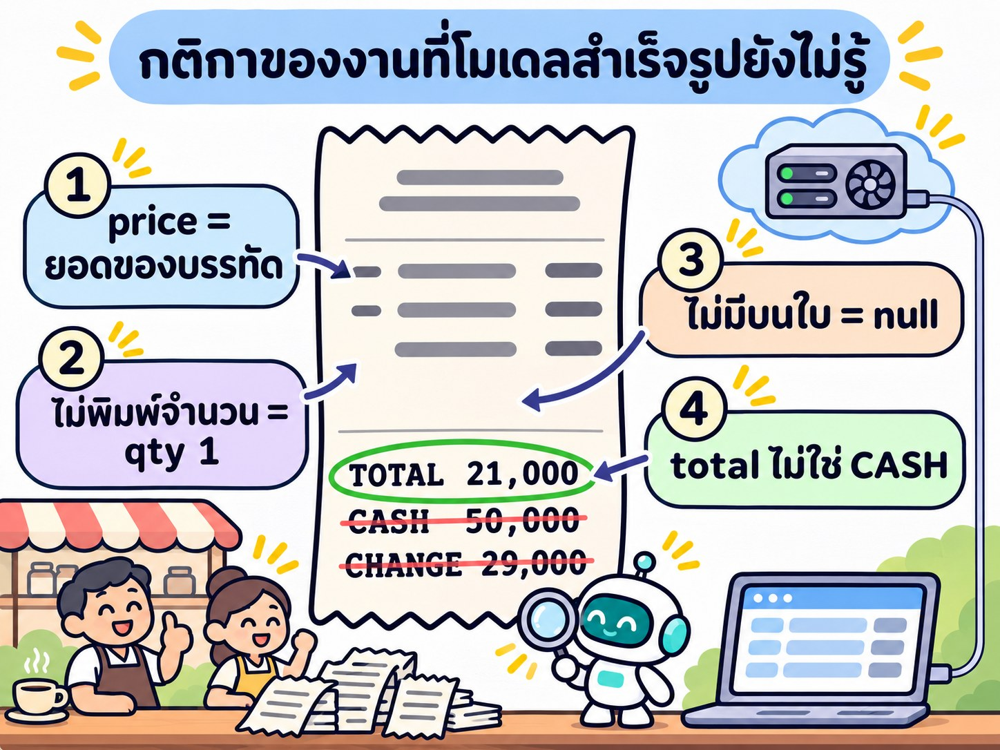
price คือยอดของบรรทัดนั้น ไม่ใช่ราคาต่อชิ้น เป็นจำนวนเต็ม ("12,000" → 12000)qty 1 · ใบไม่พิมพ์ subtotal หรือ tax = nulltotal ของใบ train_234 คือ 21,000 ไม่ใช่ CASH 50,000 หรือ CHANGE 29,000 ที่พิมพ์อยู่ถัดลงมาQwen3-VL-2B-Instruct รับภาพและคำสั่ง แล้วตอบเป็นข้อความ ซึ่ง LAB นี้สั่งให้เป็น JSON
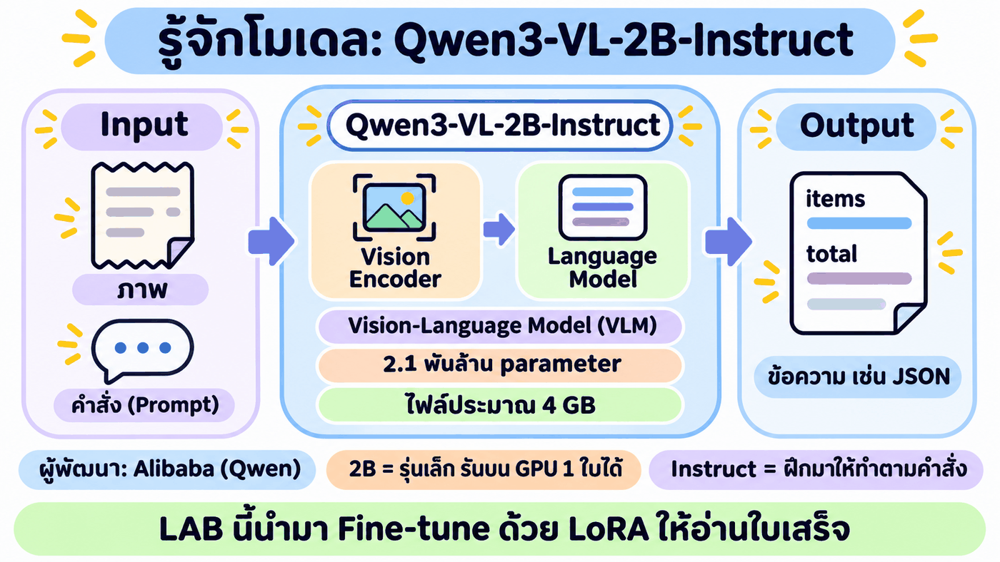
2,127,532,032 parameter (ราว 2.1 พันล้าน) · ไฟล์ประมาณ 4 GB · รันบน GPU 1 ใบได้ · Base = โมเดลนี้ตามที่โหลดมา · Fine-tuned = โมเดลนี้ + LoRA Adapter ที่เราเทรน
VLM รับภาพและข้อความพร้อมกัน แล้วเขียนคำตอบเป็นข้อความทีละ token
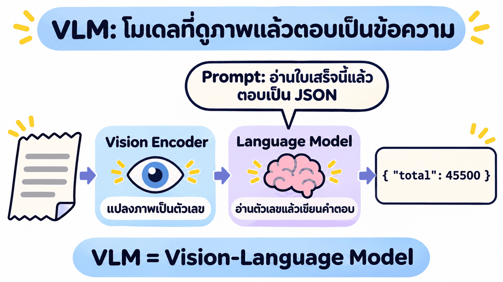
Structured Output กำหนดให้โมเดลตอบเป็นช่องที่แน่นอน จึงให้คะแนนด้วยโปรแกรมได้
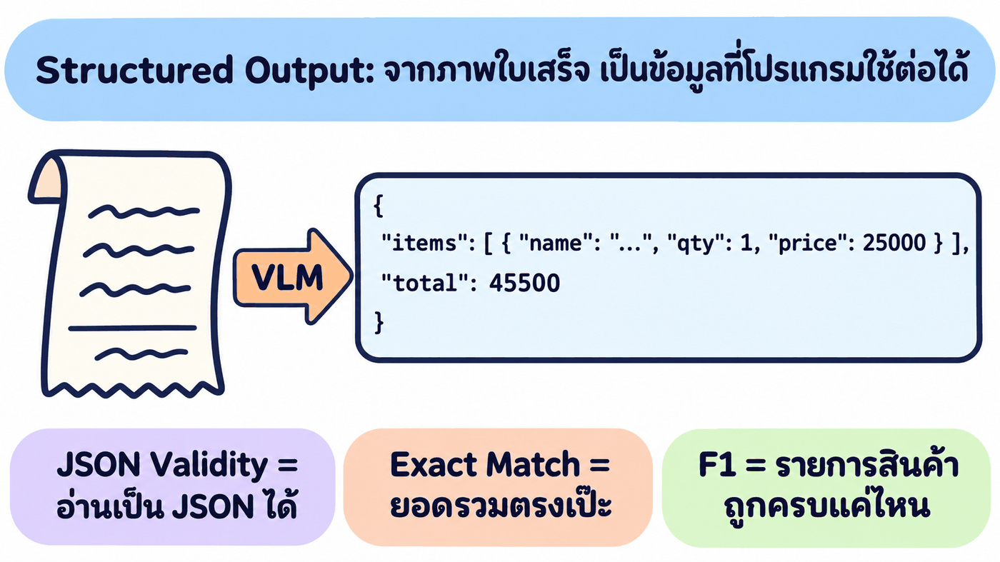
null · ไม่พิมพ์จำนวน = 1) · ใช้ Prompt ชุดเดียวกันทั้งตอนเทรน ตอนวัดผล และในเว็บผลของการทดลองตัดสินด้วยตัวชี้วัด 3 ตัว ซึ่งโปรแกรมคำนวณได้เองทุกใบ
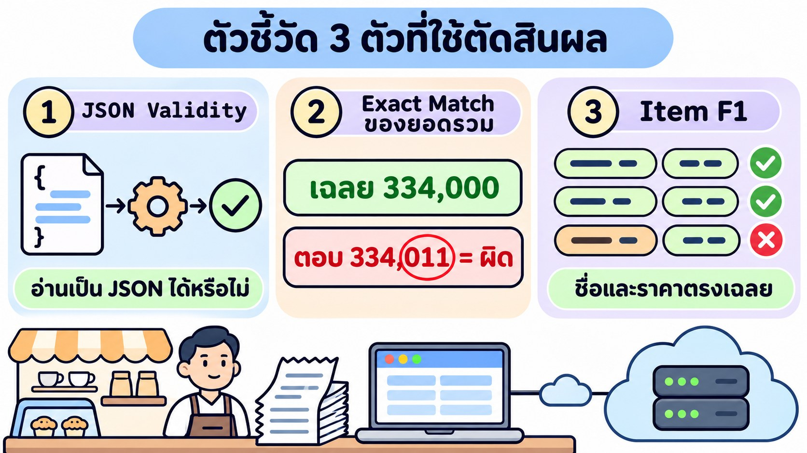
total ตรงเฉลยทุกหลัก เช่น เฉลย 334,000 ตอบ 334,011 = ผิดLoRA แช่แข็งน้ำหนักเดิมทั้งหมด แล้วเทรนเฉพาะเมทริกซ์เล็กที่เพิ่มเข้าไป
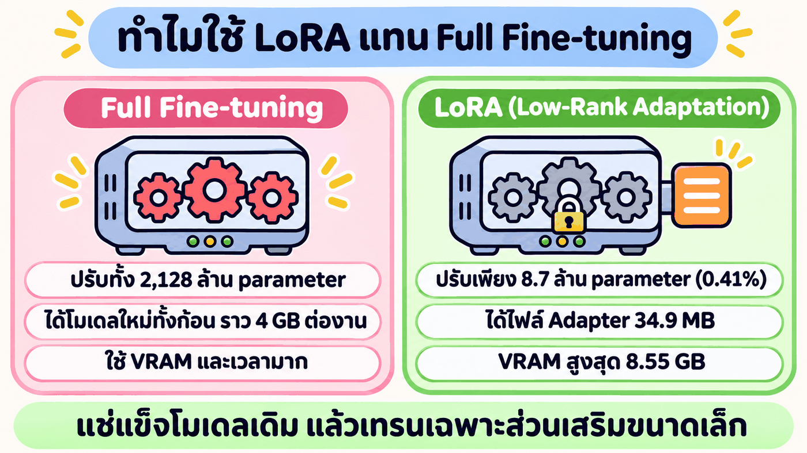
ข้อมูลวิ่งสองทาง ผ่าน W เดิมทางหนึ่ง และผ่าน A กับ B ที่เทรนอีกทางหนึ่ง แล้วนำผลมารวมกัน
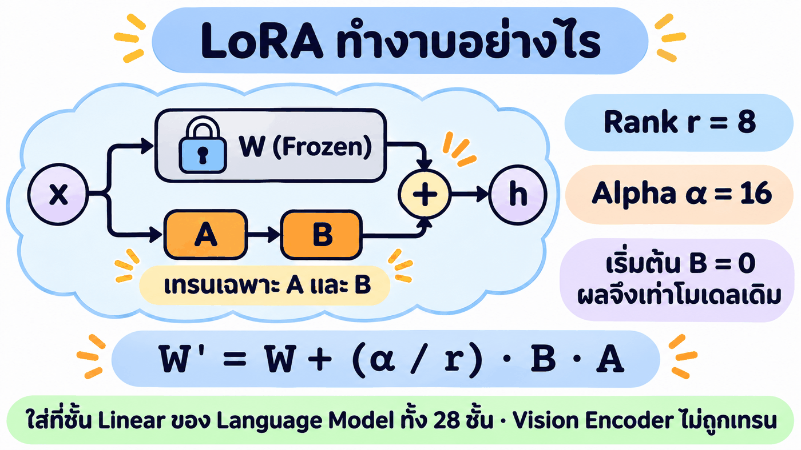
W ไม่ขยับ มีแต่ A กับ B ที่ถูกปรับB = 0 โมเดลจึงตอบเหมือนเดิมก่อนเทรนr = 8 และ Alpha α = 16 · ใส่ที่ชั้น Linear ของ Language Model q/k/v/o_proj และ gate/up/down_proj ครบ 28 ชั้น = 196 เมทริกซ์ ไม่แตะ Vision Encoderในชั้น q_proj ส่วนที่เทรนมีเพียง 32,768 ตัว คิดเป็น 0.78% ของ Wresults/adapter/
q_proj ของ Language Model)A และ B มีขนาดเพียง 8 แถวหรือ 8 คอลัมน์ ตาม Rank r = 8WAdapter ที่ได้มีขนาด 34.9 MB เล็กกว่าโมเดลเดิมราว 115 เท่า
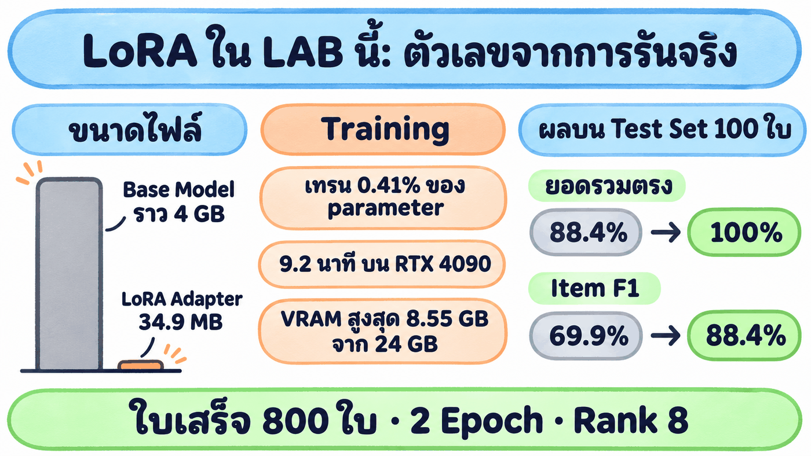
8,716,288 parameter × 4 byte = 34.9 MB คือขนาดไฟล์ Adapter พอดี · เล็กกว่าโมเดลเดิมราว 115 เท่า
LoRA ไม่ได้สอนให้โมเดลอ่านออก แต่สอนกติกาของงาน
validation loss ยังลดลงใน Epoch ที่ 2 แสดงว่ายังไม่เกิด Overfitting
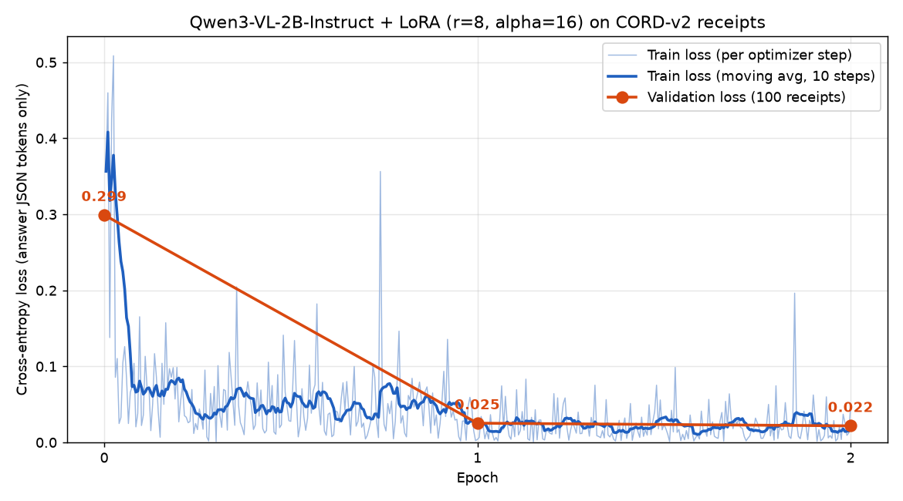
เว็บอยู่บนเครื่องของเรา ส่วน Base และ LoRA อยู่บน AI server เดียวบนเครื่องเช่า
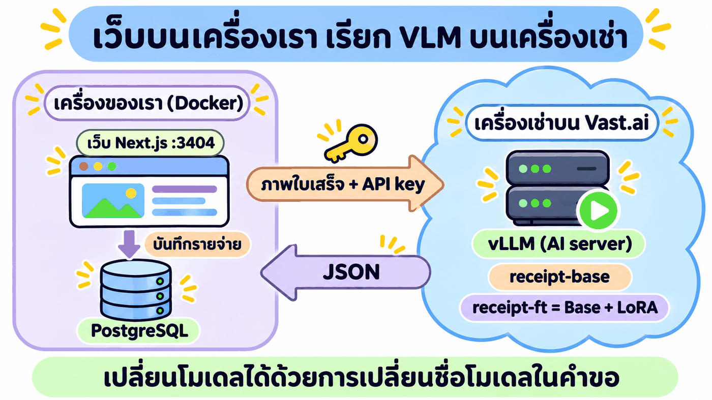
receipt-ft · คำขอที่เรียก receipt-base ไม่ใส่ · พอร์ตของ server เปิดสู่อินเทอร์เน็ตจึงต้องมี API key ซึ่งเก็บอยู่ฝั่ง server ของเว็บเท่านั้น เบราว์เซอร์ไม่เห็นการทดลองเทียบ Base กับ Fine-tuned โดยให้ทุกอย่างอื่นเหมือนกันREADME · การทดลอง
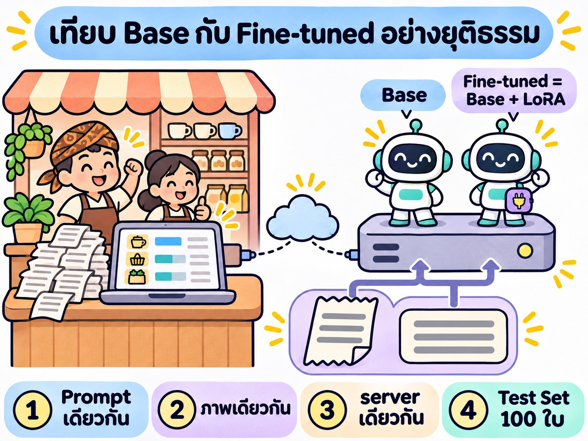
9 ขั้น ขั้นละ 1 พรอมต์
โค้ดทุกไฟล์ AI เขียนให้จากพรอมต์ เริ่มจากโฟลเดอร์ว่าง
ขั้นที่ 1–7 คือการทดลอง และขั้นที่ 8–9 เก็บงานทั้งหมดเป็นสกิล
ทำตามลำดับขั้นที่ 1 → 7 ให้ครบในรอบเดียว · คัดลอกพรอมต์ไปวางในช่องพิมพ์ของ Claude Code ทีละขั้น · โค้ดที่ AI เขียนจะอยู่ในโฟลเดอร์ lab2_vlm/code ซึ่งเริ่มจากว่าง
ก่อนเริ่มต้องทำ LAB 0 และเปิด Claude Code ที่โฟลเดอร์ของบท
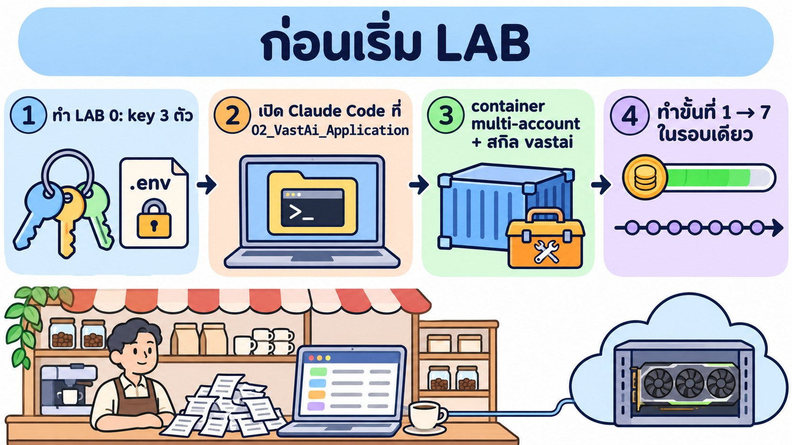
HF_TOKEN อยู่ในไฟล์ .env ของโฟลเดอร์ปัจจุบัน และห้ามแสดงค่า02_VastAi_Application · ทุกพรอมต์เริ่มด้วยบรรทัด container multi-account และสกิล vastailab2_vlm/code ซึ่งเริ่มจากว่าง · โค้ดจากรอบจริงอยู่ใน code_reference/ ไว้เทียบเช่าเครื่อง GPU
AI ค้นหาเครื่อง เช่า แล้วทดสอบความเร็วโหลดจาก Hugging Face ก่อนใช้จริง · ขั้นนี้ยังไม่มีโค้ด
ใช้เวลาจริง 15 นาที · RTX 4090 ที่แคนาดา ราคา $0.398 ต่อชั่วโมง
AI ค้นหาและเช่าเครื่อง แล้วทดสอบความเร็วโหลดก่อนใช้จริง
vapp-lab2 · image PyTorch CUDA 12.8 · disk 60 GB · พอร์ต 8000พรอมต์ · ขั้นที่ 1 · เช่าเครื่อง GPUCopy & Paste
ทำงานใน container `multi-account` โฟลเดอร์ /workspace/vastapp_lab ด้วยสกิล vastai
เช่าเครื่อง GPU สำหรับ Fine-tune โมเดลอ่านใบเสร็จ
1. เช่า RTX 4090 1 ใบ ราคารวมไม่เกิน $0.80 ต่อชั่วโมง ตั้งป้ายเครื่องว่า vapp-lab2
2. เลือกเครื่อง verified ที่เน็ตเร็ว ค่าดาวน์โหลดต่อ GB ถูก (LAB นี้โหลดราว 11 GB) และ driver รองรับ CUDA 13 แล้วเอาเครื่องที่ถูกที่สุด
3. ใช้ image PyTorch ที่มี CUDA 12.8 disk 60 GB และเปิดพอร์ต 8000 ไว้ให้ AI server
4. เมื่อเข้าเครื่องได้ ให้ลองโหลดไฟล์จาก Hugging Face ถ้าช้ากว่า 20 MB/s หรือรอเกิน 10 นาทียังไม่พร้อม ให้ลบแล้วเช่าเครื่องอื่น
กุญแจ SSH อยู่ที่ /workspace/vastai_lab/Devtool_SSH/devtoolSSH
สรุปเป็นตารางภาษาไทย: GPU · ราคาต่อชั่วโมง · ประเทศ · ความเร็วโหลดจาก Hugging Face · เวลาที่รอจนเครื่องพร้อม แล้วบอกว่าเครื่องยังเปิดอยู่ตรวจผลของคุณ · ขั้นที่ 1 · เช่าเครื่อง GPUChecklist
เครื่องแรกโหลดได้เพียง 0.84 MB/s จึงถูกลบ ส่วนเครื่องที่ใช้โหลดได้ 49–72 MB/sใช้เวลา 15 นาที
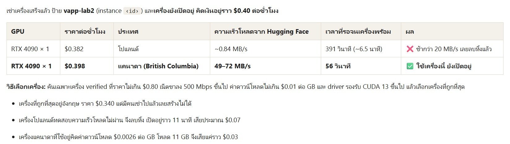
ส่วนหนึ่งของคำตอบจริง · ภาพเต็ม
ราคาต่อชั่วโมงยังไม่ใช่ต้นทุนทั้งหมดของการเช่าเครื่อง
เตรียมเครื่องและ Dataset ใบเสร็จ
AI ติดตั้งเครื่องมือบนเครื่องเช่า แล้วเขียน code/receipt_data.py ที่โหลด CORD-v2 แปลงเฉลยเป็น JSON และเก็บ Prompt ชุดเดียวที่ทุกขั้นใช้ร่วมกัน
ใช้เวลาจริง 5 นาที · Training 800 · Validation 100 · Test 100 ใบ
สคริปต์ receipt_data.py แปลงเฉลยเป็น JSON และเก็บ Prompt ชุดเดียวที่ทุกขั้นใช้ร่วมกัน
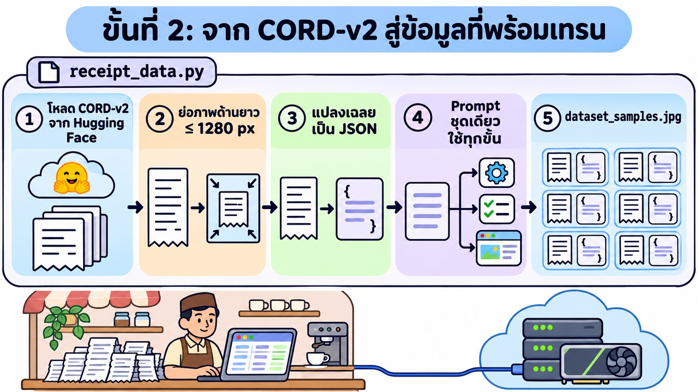
test_020) และย่อภาพด้านยาวไม่เกิน 1280 pxresults/dataset_samples.jpgพรอมต์ · ขั้นที่ 2 · เตรียมเครื่องและ Dataset ใบเสร็จCopy & Paste
ทำงานใน container `multi-account` โฟลเดอร์ /workspace/vastapp_lab ด้วยสกิล vastai
เครื่องที่ใช้คือเครื่องป้าย vapp-lab2 · กุญแจ SSH อยู่ที่ /workspace/vastai_lab/Devtool_SSH/devtoolSSH
โค้ดและผลทั้งหมดเก็บในโฟลเดอร์ lab2_vlm บนเครื่องเรา (โฟลเดอร์ที่เปิด Claude Code อยู่) ไม่ใช่ใน container
เตรียมเครื่องที่เช่าและ Dataset ใบเสร็จ CORD-v2
1. ติดตั้ง vllm peft datasets matplotlib บนเครื่องที่เช่า แยกเป็นสภาพแวดล้อม Python ของ LAB นี้ แล้วโหลดโมเดล Qwen/Qwen3-VL-2B-Instruct
2. เขียนสคริปต์ lab2_vlm/code/receipt_data.py: โหลด Dataset naver-clova-ix/cord-v2 จาก Hugging Face ใช้การแบ่ง Training/Validation/Test ตามที่ Dataset ให้มา
ตั้งชื่อใบตามชุดและลำดับ (เช่น test_020) และย่อภาพให้ด้านยาวไม่เกิน 1280 px
3. แปลงเฉลยแต่ละใบเป็น JSON แบบที่จะให้โมเดลตอบ: {"items":[{"name","qty","price"}],"subtotal","tax","total"}
ตัวเลขเป็นจำนวนเต็ม ("25,000" → 25000) · ไม่มีค่าบนใบ = null · ไม่พิมพ์จำนวน = qty 1 · รายการย่อย (เช่น topping) นับเป็นอีกบรรทัด
4. ในไฟล์เดียวกันเก็บข้อความสั่งโมเดล (ภาษาอังกฤษ) ให้อ่านใบเสร็จแล้วตอบเป็น JSON รูปแบบนี้เท่านั้น ข้อความนี้ต้องใช้ชุดเดียวกันทั้งตอนเทรน ตอนวัดผล และในเว็บ
5. รันสคริปต์บนเครื่องที่เช่า แล้วทำภาพตัวอย่าง Dataset: ใบเสร็จจริงจาก Training Set 6 ใบเรียงเป็นตาราง แต่ละใบคู่กับ JSON เฉลยของใบนั้น เก็บกลับมาที่ lab2_vlm/results/dataset_samples.jpg
ใช้ HF_TOKEN จากไฟล์ .env ของโฟลเดอร์ปัจจุบัน ห้ามแสดงค่า และห้ามทิ้ง token ไว้บนเครื่องที่เช่า
สรุปเป็นภาษาไทย: ตารางจำนวนใบเสร็จและรายการสินค้าของ Training Set · Validation Set · Test Set
ยกเฉลย JSON ของใบเสร็จ 1 ใบ แล้วอธิบายทีละช่องว่าหมายถึงอะไร แล้วบอกว่าเครื่องยังเปิดอยู่ตรวจผลของคุณ · ขั้นที่ 2 · เตรียมเครื่องและ Dataset ใบเสร็จChecklist
ได้ข้อมูล 800 / 100 / 100 ใบ และเฉลยของ test_020 แสดงว่า price คือยอดของบรรทัดtest_020
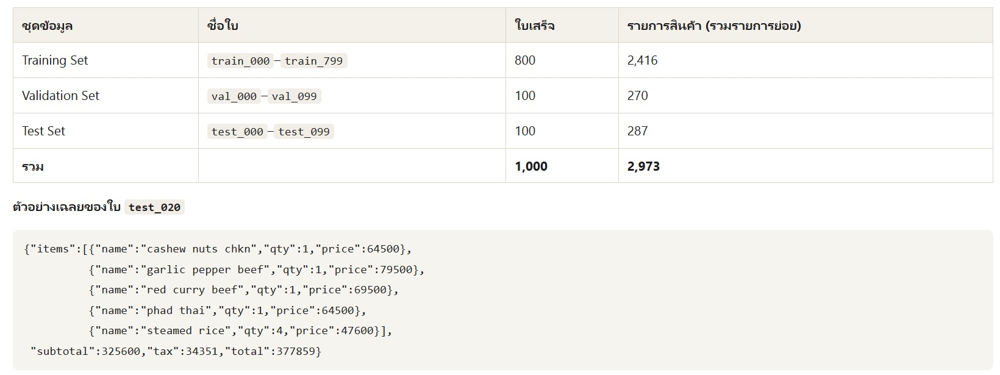
test_020: ข้าวสวย 4 ที่ price คือ 47,600 (4 × 11,900) = ยอดของบรรทัด ไม่ใช่ราคาต่อชิ้น · total 377,859 มากกว่า subtotal + tax เพราะมีค่าบริการที่ schema นี้ไม่ได้เก็บtest_020 แล้ว ได้ JSON ถูกรูปแบบแต่ total ผิด 1 หลัก (377059) = อ่านออก แต่ยังไม่แม่นHF_TOKEN ถูกใช้เฉพาะในคำสั่งที่โหลด ไม่ถูกทิ้งไว้บนเครื่องเช่าส่วนหนึ่งของคำตอบจริง · ภาพเต็ม
Training: Fine-tune ด้วย LoRA
AI เขียน code/train.py และ code/run_train.sh แล้วเทรนบนเครื่องเช่า · นี่คือขั้นที่ใช้ทฤษฎีข้อ 3 ทั้งหมด
ใช้เวลาจริง 14 นาที · เทรน 9.2 นาที · parameter ที่เทรน 0.41%
โมเดลเห็นใบเสร็จทีละใบ สะสม gradient 4 ใบ แล้วจึงปรับน้ำหนักของ LoRA 1 ครั้ง
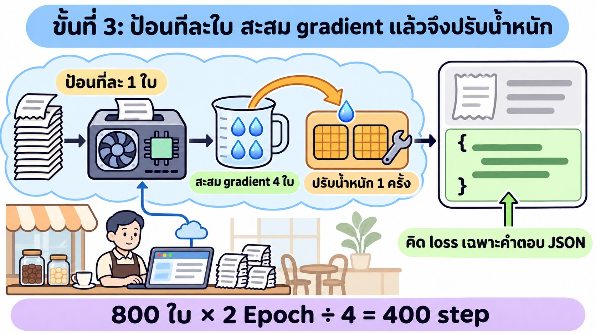
code/train.pycode/run_train.sh แล้วเก็บ Adapter กราฟ loss และตัวเลขการเทรนพรอมต์ · ขั้นที่ 3 · Training: Fine-tune ด้วย LoRACopy & Paste
ทำงานใน container `multi-account` โฟลเดอร์ /workspace/vastapp_lab ด้วยสกิล vastai
เครื่องที่ใช้คือเครื่องป้าย vapp-lab2 · กุญแจ SSH อยู่ที่ /workspace/vastai_lab/Devtool_SSH/devtoolSSH
โค้ดและผลทั้งหมดเก็บในโฟลเดอร์ lab2_vlm บนเครื่องเรา (โฟลเดอร์ที่เปิด Claude Code อยู่) ไม่ใช่ใน container
เขียนโค้ดสอนโมเดลให้อ่านใบเสร็จแล้วตอบเป็น JSON แล้วเทรนบนเครื่องที่เช่า
1. เขียนสคริปต์เทรนไว้ที่ lab2_vlm/code/train.py: เริ่มจาก Qwen/Qwen3-VL-2B-Instruct ใส่ LoRA rank 8 (alpha 16) เฉพาะชั้น Linear ของส่วนภาษา ไม่แตะส่วนมองภาพ
2. เทรนด้วย Training Set ทั้ง 800 ใบ 2 Epoch learning rate 0.0002 seed 0 · ป้อนทีละ 1 ใบ แล้วสะสม gradient 4 ใบก่อนปรับน้ำหนัก (GPU 24 GB ป้อนทีละหลายใบไม่พอ)
3. ใช้ข้อความสั่งโมเดลจาก receipt_data.py · คิด loss เฉพาะส่วนคำตอบ JSON · วัด validation loss ก่อนเทรนและหลังทุก Epoch
4. จบแล้วเก็บ LoRA adapter กราฟ loss (ป้ายภาษาอังกฤษ) และตัวเลขการเทรน (เวลา VRAM สูงสุด จำนวนพารามิเตอร์ที่เทรน)
5. นำไปรันบนเครื่องที่เช่า ให้เทรนต่อได้แม้การเชื่อมต่อหลุด และรายงานความคืบหน้าเป็นระยะจนเทรนเสร็จ
สรุปเป็นภาษาไทย: จำนวนพารามิเตอร์ที่เทรน (เทียบทั้งโมเดล) · validation loss ก่อนเทรนและหลังแต่ละ Epoch · เวลาเทรน · VRAM สูงสุด · ขนาดไฟล์ adapter แล้วบอกว่าเครื่องยังเปิดอยู่ตรวจผลของคุณ · ขั้นที่ 3 · Training: Fine-tune ด้วย LoRAChecklist
เทรนเพียง 0.41% ของ parameter ใช้เวลา 9.2 นาที และได้ Adapter 34.9 MBresults/metrics.json
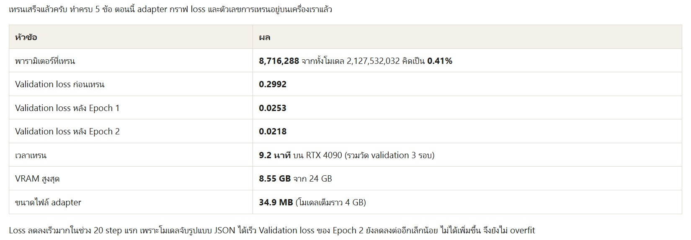
results/adapter/ส่วนหนึ่งของคำตอบจริง · ภาพเต็ม
loss ร่วงเร็วใน 20 step แรก เพราะโมเดลจับรูปแบบ JSON ได้เร็ว
A และ B ของ 196 เมทริกซ์เปิด AI server สองโมเดล
AI เขียน code/serve.sh เปิด vLLM ที่ให้บริการ receipt-base และ receipt-ft บน GPU ใบเดียว แล้วเขียน code/receipt.env ให้เว็บใช้
ใช้เวลาจริง 6 นาที · server พร้อมใน 167 วินาที · ทดสอบผ่าน 3 ข้อ
vLLM โหลดโมเดลเดิมครั้งเดียว แล้วให้บริการทั้ง receipt-base และ receipt-ft
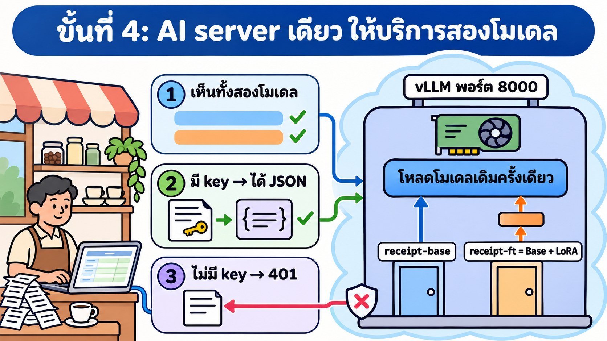
code/serve.sh เปิด AI server แบบ OpenAI-compatible ด้วย vLLM ที่พอร์ต 8000receipt-base (โมเดลเดิม) และ receipt-ft (โมเดลเดิม + LoRA adapter)code/receipt.env ให้เว็บใช้พรอมต์ · ขั้นที่ 4 · เปิด AI server สองโมเดลCopy & Paste
ทำงานใน container `multi-account` โฟลเดอร์ /workspace/vastapp_lab ด้วยสกิล vastai
เครื่องที่ใช้คือเครื่องป้าย vapp-lab2 · กุญแจ SSH อยู่ที่ /workspace/vastai_lab/Devtool_SSH/devtoolSSH
โค้ดและผลทั้งหมดเก็บในโฟลเดอร์ lab2_vlm บนเครื่องเรา (โฟลเดอร์ที่เปิด Claude Code อยู่) ไม่ใช่ใน container
เขียนโค้ดเปิด AI server ให้เว็บส่งใบเสร็จมาอ่าน
1. เขียนสคริปต์ lab2_vlm/code/serve.sh: เปิด AI server แบบ OpenAI-compatible ด้วย vLLM ที่พอร์ต 8000
มี 2 โมเดลบน GPU ใบเดียว: receipt-base (โมเดลเดิม) และ receipt-ft (โมเดลเดิม + LoRA adapter จากขั้นที่ 3)
2. server ต้องใช้ API key ที่สุ่มขึ้นและเก็บไว้บนเครื่องที่เช่าเท่านั้น และทำงานต่อได้แม้การเชื่อมต่อหลุด
3. รันบนเครื่องที่เช่า แล้วทดสอบจากนอกเครื่อง 3 ข้อ: เห็นทั้งสองโมเดล · ส่งใบเสร็จจาก Test Set 1 ใบให้ receipt-ft พร้อม key แล้วได้ JSON กลับมา · ส่งแบบไม่มี key ต้องถูกปฏิเสธ
4. เขียนไฟล์ lab2_vlm/code/receipt.env ให้มี RECEIPT_BASE_URL (ที่อยู่ที่เข้าจากนอกเครื่องได้) RECEIPT_API_KEY RECEIPT_MODEL_BASE=receipt-base และ RECEIPT_MODEL_FT=receipt-ft
ห้ามแสดงค่า key · สรุปเป็นภาษาไทย: ผลทดสอบ 3 ข้อ และเวลาที่ server ใช้เปิด แล้วบอกว่าเครื่องยังเปิดอยู่ตรวจผลของคุณ · ขั้นที่ 4 · เปิด AI server สองโมเดลChecklist
server พร้อมใน 167 วินาที และผ่านการทดสอบจากนอกเครื่องครบ 3 ข้อ167 วินาที
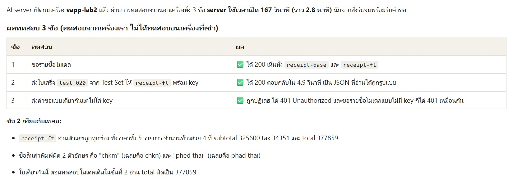
test_020 พร้อม key แล้วได้ JSON กลับมาreceipt-ft อ่าน test_020 ได้ตัวเลขถูกทุกช่อง รวม total 377859 ที่ Base อ่านผิดในขั้นที่ 2 · แต่สะกดชื่อผิด 2 จุด ("chkm", "phed thai")ส่วนหนึ่งของคำตอบจริง · ภาพเต็ม
ภาค LAB · ขั้นที่ 4 จาก 9 · ความปลอดภัยของ key
ข้อทดสอบที่ 3 ยืนยันว่าคนไม่มี key ใช้ server ไม่ได้ · ไฟล์ code/receipt.env มี key อยู่ จึงไม่ถูกเก็บขึ้น git
โมเดลเดิมถูกโหลด ครั้งเดียว · receipt-ft คือโมเดลเดิม + Adapter 34.9 MB ที่ถูกใส่เฉพาะคำขอที่เรียกชื่อนี้ (ทฤษฎีข้อ 5)
Evaluation: Base เทียบ Fine-tuned บน Test Set
AI เขียน code/eval.py ส่ง Test Set 100 ใบให้ทั้งสองโมเดล ให้คะแนน แล้วเก็บผลทั้งหมดกลับมาที่เครื่องเรา
ใช้เวลาจริง 8 นาที · ยอดรวมตรง 88.4% → 100.0% · Item F1 69.9% → 88.4%
ขั้นที่ 5 ส่ง Test Set ทีละใบให้ทั้งสองโมเดล แล้วให้คะแนนด้วยโปรแกรม
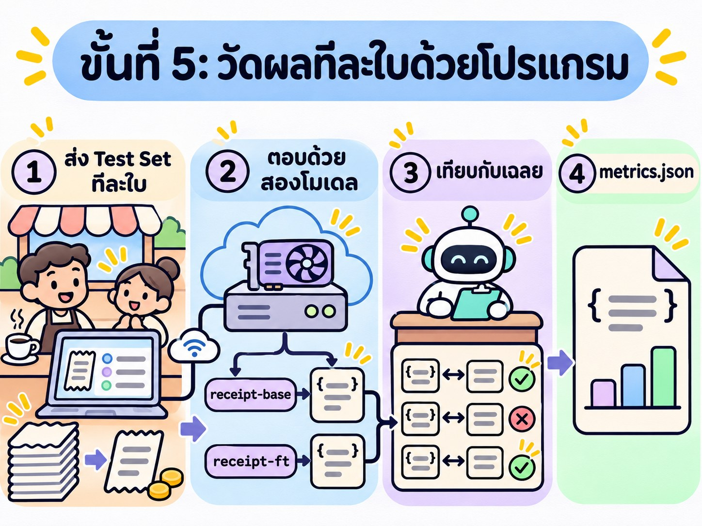
receipt-base และ receipt-ft ทีละใบ ด้วยข้อความสั่งเดียวกับตอนเทรน temperature 0metrics.json คำตอบรายใบ กราฟแท่ง และภาพตัวอย่าง 4 ใบ กลับมาที่ lab2_vlm/resultsพรอมต์ · ขั้นที่ 5 · Evaluation: Base เทียบ Fine-tuned บน Test SetCopy & Paste
ทำงานใน container `multi-account` โฟลเดอร์ /workspace/vastapp_lab ด้วยสกิล vastai
เครื่องที่ใช้คือเครื่องป้าย vapp-lab2 · กุญแจ SSH อยู่ที่ /workspace/vastai_lab/Devtool_SSH/devtoolSSH
โค้ดและผลทั้งหมดเก็บในโฟลเดอร์ lab2_vlm บนเครื่องเรา (โฟลเดอร์ที่เปิด Claude Code อยู่) ไม่ใช่ใน container
เขียนโค้ดวัดว่า Fine-tune แล้วอ่านใบเสร็จแม่นขึ้นเท่าไร แล้ววัดจริง
1. เขียนสคริปต์ lab2_vlm/code/eval.py: ส่ง Test Set ทั้ง 100 ใบให้ receipt-base และ receipt-ft ผ่าน AI server ทีละใบ ด้วยข้อความสั่งเดียวกับตอนเทรน temperature 0
2. ให้คะแนน: JSON อ่านได้ (%) · ยอดรวมตรงเฉลยทุกหลัก (%) · Item F1 (%) โดยรายการถูกเมื่อชื่อและราคาตรงเฉลย (เทียบชื่อแบบไม่สนตัวพิมพ์ ช่องว่าง สัญลักษณ์) · วินาทีต่อใบ
3. เก็บ metrics.json (รวมตัวเลขการเทรนจากขั้นที่ 3) คำตอบรายใบ กราฟแท่ง Base vs Fine-tuned และภาพตัวอย่าง 4 ใบ (ใบเสร็จ เฉลย คำตอบสองโมเดล สีแดง = ผิด) ข้อความในภาพเป็นภาษาอังกฤษ
4. รันบนเครื่องที่เช่า แล้วเก็บผลทั้งหมดพร้อม LoRA adapter และกราฟ loss กลับมาไว้ที่ lab2_vlm/results
สรุปเป็นตารางภาษาไทย Base vs Fine-tuned: JSON อ่านได้ (%) · ยอดรวมตรง (%) · Item F1 (%) · วินาทีต่อใบ
ยกตัวอย่าง 2 ใบที่ Fine-tuned อ่านถูกแต่ Base อ่านผิด แล้วบอกว่าเครื่องยังเปิดอยู่ตรวจผลของคุณ · ขั้นที่ 5 · Evaluation: Base เทียบ Fine-tuned บน Test SetChecklist
Fine-tuned ดีกว่า Base ทั้งยอดรวมตรงและ Item F1 และยังตอบเร็วกว่า
ยอดรวมวัดเฉพาะ 95 ใบที่เฉลยมียอดรวม · กราฟขวา: วินาทีต่อใบ · Fine-tuned เร็วขึ้น ทั้งที่โมเดลใหญ่เท่าเดิม เพราะตอบ JSON ล้วน ส่วน Base ครอบคำตอบด้วยเครื่องหมาย code block ทุกใบ
ยอดรวมถูกครบ 95 ใบ และรายการที่อ่านถูกเพิ่มขึ้น 52 รายการresults/metrics.json
Base อ่านตัวอักษรออก แต่ผิดกติกาของงาน: test_040 หยิบราคาต่อหน่วย และ test_051 ตัดคำออกจากชื่อresults/eval/images/examples.jpg
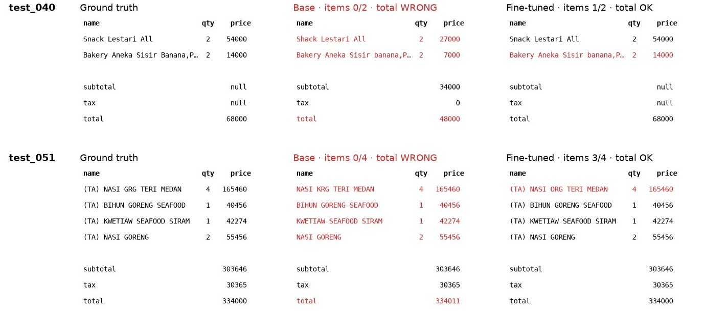
สีแดง = ไม่ตรงเฉลย · แต่ละแถว: ชื่อใบ | เฉลย (Ground truth) | Base | Fine-tuned · ส่วนหนึ่งของภาพผลจริง · ภาพเต็ม
test_086 เอายอด CASH เป็นยอดรวม และ test_091 นับบรรทัดเงินทอนเป็นสินค้าresults/eval/images/examples.jpg
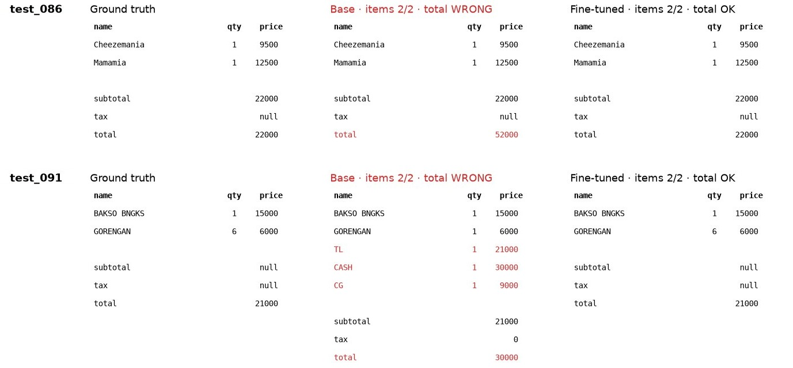
สีแดง = ไม่ตรงเฉลย · แต่ละแถว: ชื่อใบ | เฉลย (Ground truth) | Base | Fine-tuned · ส่วนหนึ่งของภาพผลจริง · ภาพเต็ม
สร้างเว็บสมุดรายจ่ายแล้วทดสอบ
AI เขียนเว็บ Next.js + PostgreSQL ทั้งหมดไว้ที่ code/web เปิดบน Docker ของเครื่องเรา แล้วทดสอบอ่านใบเสร็จ 3 ใบผ่านหน้าเว็บ
ใช้เวลาจริง 6 นาที · ผ่านเว็บ Fine-tuned ได้ยอดรวมถูก 3 จาก 3 ใบ · Base ผิดทั้ง 3 ใบ
เว็บสมุดรายจ่ายอยู่บนเครื่องของเรา และเรียก AI server บนเครื่องเช่า
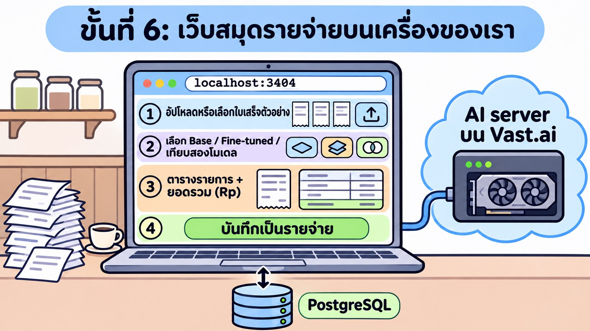
code/web เปิดด้วย docker compose ที่ http://localhost:3404receipt_data.pyพรอมต์ · ขั้นที่ 6 · สร้างเว็บสมุดรายจ่ายแล้วทดสอบCopy & Paste
ทำงานใน container `multi-account` โฟลเดอร์ /workspace/vastapp_lab ด้วยสกิล vastai · เครื่องที่ใช้คือเครื่องป้าย vapp-lab2
โค้ดและผลทั้งหมดเก็บในโฟลเดอร์ lab2_vlm บนเครื่องเรา (โฟลเดอร์ที่เปิด Claude Code อยู่) ไม่ใช่ใน container
สร้างเว็บ "สมุดรายจ่ายจากใบเสร็จ" บนเครื่องนี้ (Docker Desktop) ที่ต่อกับ AI server บน Vast.ai
1. เขียนเว็บ Next.js + PostgreSQL ไว้ที่ lab2_vlm/code/web เปิดด้วย docker compose ชื่อ project vapp-lab2 ที่ http://localhost:3404 หน้าตาเป็นแอปจริง ภาษาไทย
2. หน้า "อ่านใบเสร็จ": อัปโหลดรูปหรือกดใบเสร็จตัวอย่าง → เลือก Base / Fine-tuned / เทียบสองโมเดล → แสดงรูปคู่กับตารางรายการและยอดรวม (หน่วย Rp) → กดบันทึกเป็นรายจ่าย
3. ใบเสร็จตัวอย่าง: นำ 6 ใบจาก Test Set พร้อมเฉลยมาจากเครื่องที่เช่า (ต้องมี test_020 test_051 test_092) เลือกตัวอย่างแล้วให้ขึ้น ✓/✗ เทียบเฉลยทีละบรรทัด
4. หน้า "รายจ่าย": จำนวนใบ รายจ่ายรวม และตารางรายใบที่กดดูรายการหรือลบได้
5. เว็บเรียก AI server ด้วยค่าใน lab2_vlm/code/receipt.env (key อยู่ฝั่ง server ของเว็บเท่านั้น) ย่อรูปด้านยาวไม่เกิน 1280 px และใช้ข้อความสั่งโมเดลชุดเดียวกับใน receipt_data.py
6. เปิดเว็บแล้วทดสอบอ่าน test_092 test_051 test_020 ผ่านเว็บด้วยทั้งสองโมเดล
สรุปเป็นตารางภาษาไทย: ใบเสร็จ · โมเดล · รายการที่อ่านถูก · ยอดรวมถูกหรือผิด · เวลา (วินาที) ห้ามแสดงค่า key แล้วบอกว่าเครื่องบน Vast.ai ยังเปิดอยู่ตรวจผลของคุณ · ขั้นที่ 6 · สร้างเว็บสมุดรายจ่ายแล้วทดสอบChecklist
ผ่านเว็บ Fine-tuned ได้ยอดรวมถูกทั้ง 3 ใบ ส่วน Base ผิดทั้ง 3 ใบผลขั้นที่ 6
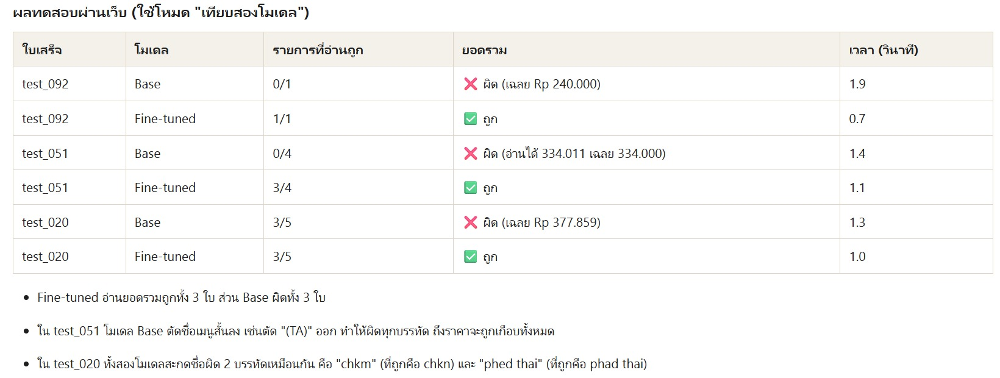
ส่วนหนึ่งของคำตอบจริง · ภาพเต็ม
ใบ test_092 ในโหมดเทียบสองโมเดล: Base นับเงินสดและเงินทอนเป็นสินค้า ส่วน Fine-tuned ถูกทั้งหมด
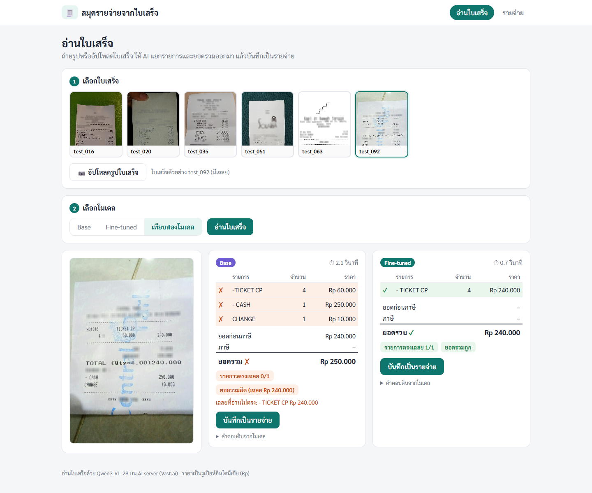
Base นับ CASH กับ CHANGE เป็นสินค้า ยอดรวม Rp 250.000 ผิด · Fine-tuned ได้ TICKET CP 4 ใบ ยอดรวม Rp 240.000 ถูก
ใบ test_020 ทั้งสองโมเดลสะกดชื่อผิดเหมือนกัน ซึ่งเป็นข้อจำกัดของการมองภาพ
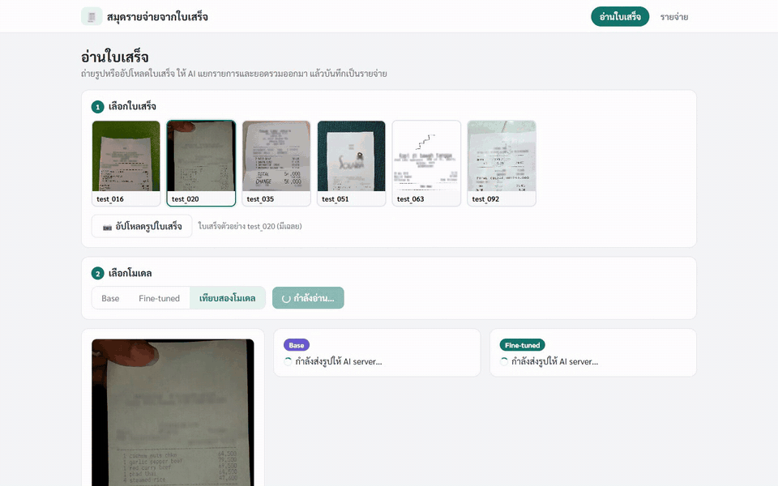
test_020 ทั้งสองโมเดลสะกด "chkm" และ "phed thai" ผิดเหมือนกัน = จุดนี้เป็นข้อจำกัดของ การมองภาพ ซึ่งเราไม่ได้เทรน (Vision Encoder ถูก Freeze)กดบันทึกเป็นรายจ่าย แล้วข้อมูลจะถูกเก็บใน PostgreSQL และแสดงในหน้ารายจ่าย
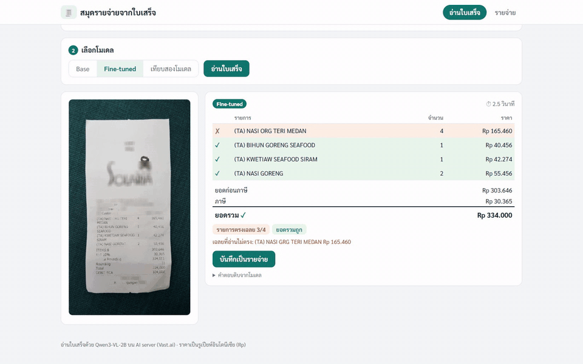
อ่านใบ test_051 กดบันทึกเป็นรายจ่าย แล้วเปิดหน้ารายจ่าย
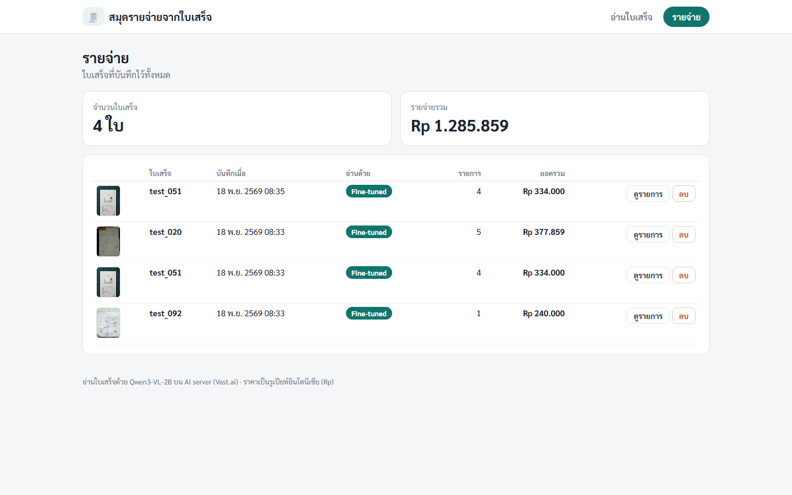
หน้ารายจ่าย: ใบเสร็จที่บันทึก 4 ใบ รายจ่ายรวม Rp 1.285.859 พร้อมตารางรายใบที่มีปุ่มดูรายการและลบ
ลบเครื่องและสรุปค่าใช้จ่าย (ห้ามข้าม)
AI ตรวจว่าผลกลับมาครบ ลบเครื่อง ปิดเว็บ แล้วอ่านค่าใช้จ่ายจริงจากใบแจ้งหนี้
ใช้เวลาจริง 2 นาที · ยอดรวมทั้ง LAB $0.58
ตรวจผลให้ครบก่อน แล้วจึงลบเครื่อง เพราะเงินเดินตลอดเวลาที่เครื่องเปิด
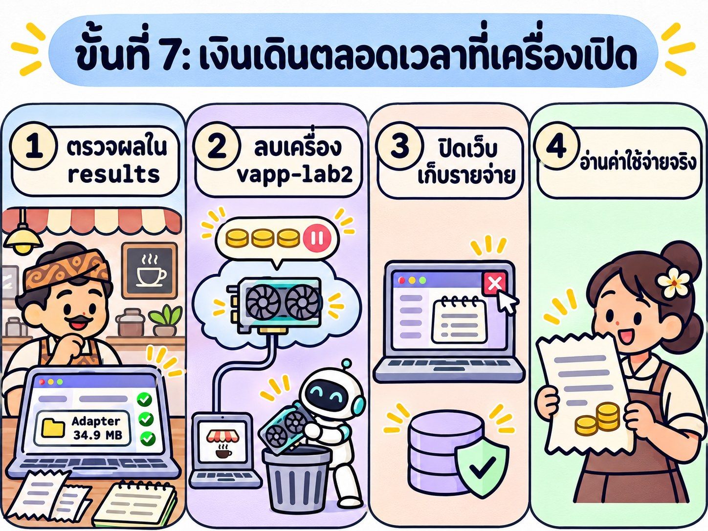
lab2_vlm/results ครบ: metrics.json กราฟ ภาพตัวอย่าง และ LoRA adaptervapp-lab2 แล้วตรวจว่าไม่มีเครื่องป้ายนี้ค้าง (ห้ามแตะเครื่องป้ายอื่น)lab2_vlm/code/web โดยเก็บรายจ่ายที่บันทึกไว้พรอมต์ · ขั้นที่ 7 · ลบเครื่องและสรุปค่าใช้จ่าย (ห้ามข้าม)Copy & Paste
ทำงานใน container `multi-account` โฟลเดอร์ /workspace/vastapp_lab ด้วยสกิล vastai
โค้ดและผลทั้งหมดเก็บในโฟลเดอร์ lab2_vlm บนเครื่องเรา (โฟลเดอร์ที่เปิด Claude Code อยู่) ไม่ใช่ใน container
ปิดทุกอย่างของ LAB 2
1. ตรวจว่าผลใน lab2_vlm/resultsครบ (metrics.json กราฟ ภาพตัวอย่าง และ LoRA adapter)
2. ลบเครื่องป้าย vapp-lab2 แล้วตรวจว่าไม่มีเครื่องป้ายนี้ค้างในบัญชี (ห้ามแตะเครื่องป้ายอื่น)
3. ปิดเว็บในโฟลเดอร์ lab2_vlm/code/web โดยเก็บรายจ่ายที่บันทึกไว้
สรุปเป็นภาษาไทย ค่าใช้จ่ายจริงของเครื่อง vapp-lab2: อายุเครื่อง · ราคาต่อชั่วโมง · ยอดที่ถูกคิด (GPU · disk · รับส่งข้อมูล)ตรวจผลของคุณ · ขั้นที่ 7 · ลบเครื่องและสรุปค่าใช้จ่าย (ห้ามข้าม)Checklist
ค่าเช่าทั้ง LAB คือ $0.58 และค่า GPU คือราว 90% ของบิล$0.537
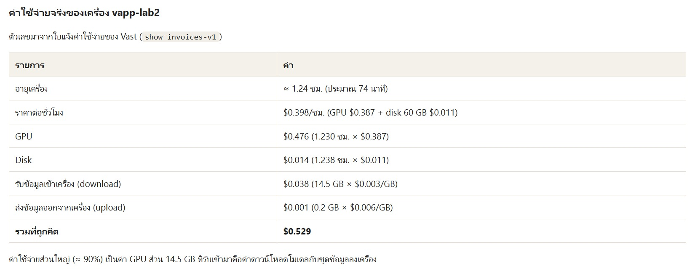
ส่วนหนึ่งของคำตอบจริง · ภาพเต็ม
ภาค LAB · ขั้นที่ 7 จาก 9
เทรนจริง 9.2 นาที แต่เครื่องเปิดอยู่ 1.25 ชม. · เงินเดินตลอดเวลาที่เครื่องเปิด ค่า GPU คือราว 90% ของบิล
สิ่งที่เหลือจากเงิน $0.58 คือไฟล์ Adapter 34.9 MB ใน lab2_vlm/results/adapter/ · ลบเครื่องแล้วทุกอย่างบนเครื่องหายหมด · ต้องเห็นว่า ไม่มีเครื่องป้ายนี้เหลือ แล้วเปิดหน้า Instances ดูอีกครั้ง
เก็บงาน 7 ขั้นที่สำเร็จแล้วเป็นสกิล เพื่อให้ทำซ้ำได้ในคำสั่งเดียว

สกิล คือไฟล์ที่เก็บวิธีทำงานที่สำเร็จแล้ว พร้อมโค้ดที่ใช้ได้จริง ไว้ให้ AI ทำซ้ำได้ในคำสั่งเดียว
สร้างสกิลเวอร์ชัน 0
AI อ่านพรอมต์ โค้ด และผลของ LAB แล้วเขียน SKILL.md พร้อมคัดลอกโค้ด 5 ไฟล์เข้าไปในสกิล
ใช้เวลาจริง 2 นาที · ไม่ต้องเช่าเครื่อง · ได้สกิล receipt-vlm-finetune
AI อ่านพรอมต์ โค้ด และผลของ LAB แล้วเขียน SKILL.md พร้อมโค้ดที่ใช้ได้จริง
PROMPTS.md โค้ดใน lab2_vlm/code และผลใน lab2_vlm/resultsskill_v0/SKILL.md ชื่อ receipt-vlm-finetune: ค่าที่ปรับได้ · ขั้นตอน · เกณฑ์ตรวจผ่าน · กติกาเรื่องเงินskill_v0/scripts ไม่ต้องเขียนใหม่.claude/skills/receipt-vlm-finetuneพรอมต์ · ขั้นที่ 8 · สร้างสกิลเวอร์ชัน 0Copy & Paste
สร้างสกิลเวอร์ชัน 0 จากงานของ LAB 2 ที่เพิ่งทำเสร็จ เพื่อให้ครั้งหน้าสั่งทำซ้ำได้ในคำสั่งเดียว
1. ดูงานทั้งหมดจากพรอมต์ทุกขั้นใน lab2_vlm/PROMPTS.md โค้ดใน lab2_vlm/code และผลใน lab2_vlm/results
2. เขียนเป็นสกิลชื่อ receipt-vlm-finetune เก็บที่ lab2_vlm/skill_v0/SKILL.md ให้มี name กับ description (บอกว่าใช้เมื่อไร) · ค่าที่ปรับได้พร้อมค่าเริ่มต้น · ขั้นตอน · เกณฑ์ตรวจผ่าน · กติกาเรื่องเงิน (ลบเครื่องเสมอ)
3. คัดลอกโค้ดที่ใช้ได้แล้ว (เตรียม Dataset เทรน เปิด server วัดผล) ไปไว้ที่ lab2_vlm/skill_v0/scripts ให้สกิลใช้โค้ดชุดนี้ ไม่ต้องเขียนใหม่
4. ให้สกิลนี้เรียกใช้สกิล vastai ต่อ ไม่เขียนวิธีใช้ Vast.ai ซ้ำ
5. ติดตั้งเป็นสกิลของโปรเจกต์ที่ .claude/skills/receipt-vlm-finetune ของโฟลเดอร์ปัจจุบัน
สรุปเป็นภาษาไทย: สกิลทำอะไรได้ · ค่าที่ปรับได้ · ไฟล์ที่สร้าง
ไม่ต้อง commitตรวจผลของคุณ · ขั้นที่ 8 · สร้างสกิลเวอร์ชัน 0Checklist
สกิล receipt-vlm-finetune มีตารางค่าที่ปรับได้ เช่น epochs 2 และ lora_rank 8
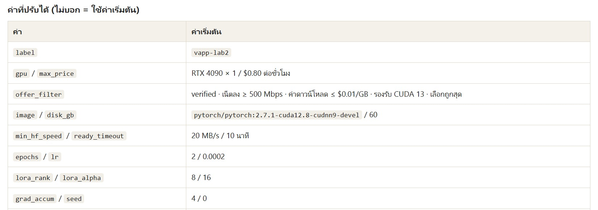
ส่วนหนึ่งของคำตอบจริง · ภาพเต็ม
ลองใช้สกิลทำซ้ำในคำสั่งเดียว
AI ตัวใหม่ได้คำสั่ง 4 บรรทัด แล้วเช่าเครื่อง เตรียม Dataset เทรน 1 Epoch เปิด server วัดผล และลบเครื่องเองทั้งหมด โดยใช้โค้ดในสกิล ไม่เขียนใหม่
ใช้เวลาจริง 34 นาที · ยอดรวมตรง 88.4% → 97.9% · Item F1 69.9% → 86.9% · ค่าเช่า $0.23
ขั้นที่ 9 ใช้พรอมต์เดียวแทน 7 พรอมต์ และเทรนเพียง 1 Epoch
พรอมต์ · ขั้นที่ 9 · ลองใช้สกิลทำซ้ำในคำสั่งเดียวCopy & Paste
ใช้สกิล receipt-vlm-finetune Fine-tune โมเดลอ่านใบเสร็จ 1 Epoch บนเครื่องป้าย vapp-lab2-skill ไม่ต้องเปิดเว็บ เสร็จแล้วลบเครื่อง
เก็บผลไว้ที่ lab2_vlm/results/skill_v0_run ห้ามเขียนทับผลเดิมใน lab2_vlm/results
สรุปเป็นภาษาไทย: ยอดรวมตรงและ Item F1 ก่อน vs หลังบน Test Set · เวลาแต่ละขั้น · ค่าใช้จ่ายจริง
ไม่ต้อง commitตรวจผลของคุณ · ขั้นที่ 9 · ลองใช้สกิลทำซ้ำในคำสั่งเดียวChecklist
สกิล v0 กับ 1 Epoch ได้ยอดรวมตรง 97.9% และ Item F1 86.9%
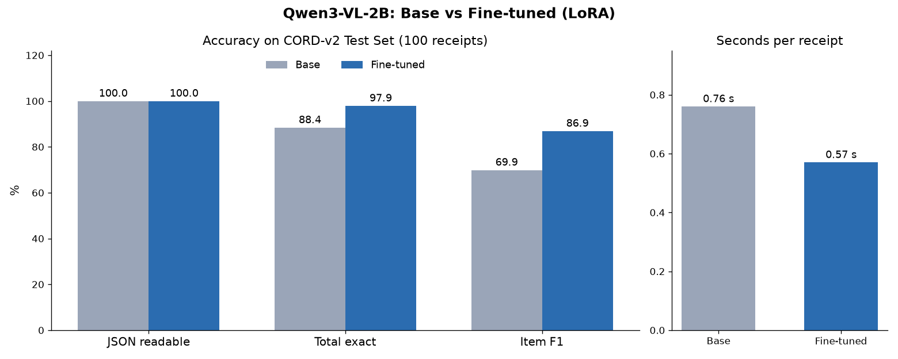
ให้เทียบแท่งสีน้ำเงินกับรอบ 2 Epoch ของขั้นที่ 5 (100.0% และ 88.4%) · Test Set 100 ใบ · ที่มา results/skill_v0_run/eval/metrics.json
สกิล v0 ทำงานผ่านในรอบแรก โดยไม่ต้องเขียนโค้ดใหม่ และค่าใช้จ่ายจริงคือ $0.228
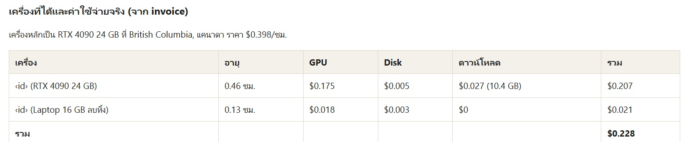
ส่วนหนึ่งของคำตอบจริง · ภาพเต็ม
สกิล v0 ยังพลาด 4 จุดในรอบทดสอบ และต้องแก้ในเวอร์ชัน 1README · ขั้นที่ 9
$0.80 และค่าดาวน์โหลด $0.01 ถูกอ่านเป็น 1.80 และ 1.01 ตอนโหลดสกิล เพราะ $0 ในไฟล์สกิลถูกแทนค่า (รอบนี้ไม่เสียหาย เพราะเครื่องที่ถูกที่สุดราคา $0.398) → v1: เขียนเป็น "0.80 USD/ชม." ไม่ใช้ $ ตามด้วยตัวเลขAdapter 34.9 MB เปลี่ยนผลได้มากเพียงใด
ผลรวม ตารางสรุป บทเรียน และข้อจำกัด
Fine-tune ทั้งสองรอบดีกว่า Base และรอบ 2 Epoch ดีกว่ารอบ 1 Epoch เล็กน้อยผลรวม
results/metrics.json และ results/skill_v0_run/eval/metrics.jsonสั่งทีละขั้นกับสกิล v0 ได้ผลใกล้กัน แต่สกิลใช้พรอมต์ เวลา และเงินน้อยกว่าตารางหลัก
| สั่งทีละขั้น (ขั้นที่ 1–7) | สกิล v0 | |
|---|---|---|
| จำนวนพรอมต์ | 7 | 1 |
| จำนวน Epoch | 2 | 1 |
| เวลาเทรน | 9.2 นาที | 4.8 นาที |
| ยอดรวมตรงบน Test Set | 100.0% | 97.9% |
| Item F1 บน Test Set | 88.4% | 86.9% |
| เวลาทั้งหมด | 56 นาที | 34 นาที |
| ค่าเช่า | $0.58 (รวมเว็บ) | $0.23 (ไม่เปิดเว็บ) |
บทเรียนจาก LAB 2
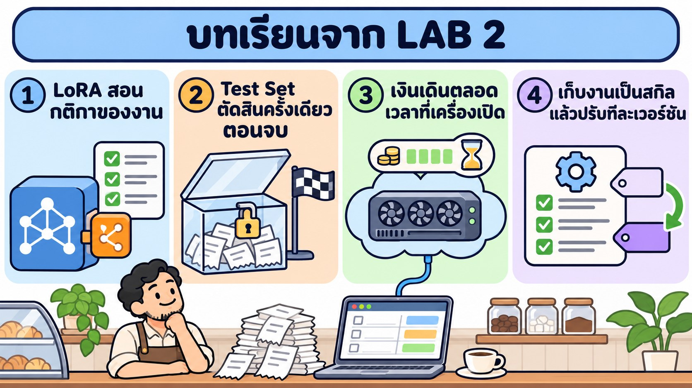
A และ B ของ 196 เมทริกซ์ข้อจำกัดที่ยังเหลือ: ผลยังไม่สมบูรณ์ 4 เรื่อง
test_020 ทั้งสองโมเดลสะกด "chkm" และ "phed thai" ผิดเหมือนกัน = จุดนี้เป็นข้อจำกัดของ การมองภาพ ซึ่งเราไม่ได้เทรน (Vision Encoder ถูก Freeze)ตรวจอีกครั้งว่าไม่มีเครื่องค้างในบัญชี
รายละเอียดเต็มของ LAB นี้: README.md · พรอมต์ทั้ง 9 ขั้น: PROMPTS.md · กลับหน้ารวมของบท: ../README.md